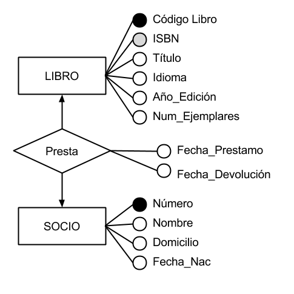

Introducción
Una de las mayores dificultades que existen a la hora de diseñar una base de datos es que el diseñador la concibe pensando
en el modelo de datos con el que va a trabajar la máquina. Esto conlleva a perder la visión conceptual del problema, quedando
el diseño influido (contaminado) por cuestiones de implementación, de modo que el diseño es inválido cuando se implanta la
base de datos en otro sistema.
El Modelo Entidad Relación (MER), propuesto por Peter P. Chen, presenta una vista unificada de los datos, centrándose en la
estructura lógica y abstracta de los datos, como representación del mundo real, con independencia de consideraciones de tipo físico.
Como su nombre lo índica, el MER se basa en entidades (cualquier objeto de interés) que se interrelacionan o asocian entre sí.
MER tiene dos tipos de propiedades:
-
Estáticas: describen la estructura del Universo de Discurso y apenas varían en el tiempo.
-
Dinámicas: permiten el paso de un estado a otro, ejecutando operaciones sobre los datos almacenados en la estructura; se
corresponden con la naturaleza evolutiva del mundo real.
La representación gráfica de un tipo de entidad es un rectángulo etiquetado con el nombre de entidad.
Entidades
Una entidad es "una persona, lugar, cosa, concepto o suceso, real o abstracto, de interés para la empresa". Es aquel objeto acerca del cual
queremos almacenar información en la base de datos.
La representación gráfica de un tipo de entidad es un rectángulo etiquetado con el nombre de entidad.
Figura 2.1. Ejemplos de Entidad
Existen dos clases de entidad:
-
Regulares. Las ocurrencias de un tipo de entidad regular tienen existencia propia, es decir, existen por sí mismas.
-
Débiles. La existencia de cada ocurrencia de un tipo de entidad débil depende de la existencia de la
ocurrencia del tipo de entidad regular del cual aquella depende, es decir, si se elimina una ocurrencia del tipo de entidad regular, desaparecen
también con ella todas las ocurrencias de la entidad débil dependientes de la misma. Se representa con dos rectángulos concéntricos con su nombre
en el interior.
Figura 2.2. Clase de Entidad
Relaciones
Definimos la relación como la asociación o correspondencia entre entidades.
Llamamos tipo de relación a la estructura genérica del conjunto de relaciones existentes entre dos o más tipos de entidad, mientras que la ocurrencia
de una relación será la vinculación existente entre las ocurrencias concretas de cada uno de los tipos de entidad que intervienen en la relación.
Por ejemplo, el tipo de entidad AUTOR se relaciona con el tipo de entidad DOCUMENTO mediante el tipo de relación Escribe; una ocurrencia de esta
relación es por ejemplo: "C.J. Date ha escrito el documento Introducción a los Sistemas de Bases de Datos."
Se representa la relación mediante un rombo etiquetado con el nombre, unido mediante arcos a los tipos de entidad que asocia.

Figura 2.3. Ejemplo de Relación entre Entidades
Características de la Relación:
-
Nombre: Por el que identificamos de forma única el tipo de relación y mediante el cual lo referenciamos
-
Grado: Número de tipos de entidad que participan en un tipo de relación. Puede ser de grado 2 (binarias) cuando asocian dos tipos de entidad,
de grado 3 (ternarias) cuando asocian tres tipos de entidad, y en general de grado n.
-
Tipo de Correspondecia: Número máximo de ocurrencias de un tipo de entidad que pueden intervenir por cada ocurrencia del otro tipo de entidad
asociado en la relación. El tipo de correspondencia es 1:1 cuando en la relación sólo puede aparecer, como máximo, una ocurrencia del tipo de entidad
por cada ocurrencia del otro. Será 1:N si para uno de los tipos de entidad puede haber un número indefinido (mayor que 1) de ocurrencias. Será
N:M si esto último ocurre para ambos tipos de entidad. Para representarlo gráficamente, se puede poner una etiqueta que lo indique al lado del
rombo que representa el tipo de relación o una punta de flecha hacia el tipo de entidad que participa con más de una ocurrencia en la relación.

Figura 2.4. Ejemplo Tipos de Correspondencia
Entre dos tipos de entidad puede existir más de un tipo de relación, por ejemplo:

Figura 2.5. Ejemplo de Entidad con más de una Relación
Atributo
Es cada una de las propiedades o características que tiene un tipo de entidad o de relación. Así, el tipo de entidad AUTOR tiene como atributos
el Nombre, la Nacionalidad, la Fecha_nac, la Bibliografía, etc.; y los atributos del tipo de entidad DOCUMENTO
son, entre otros, Título y Resumen. El tipo de relación Escribe entre AUTOR y DOCUMENTO tiene como atributo
Orden_de_firma.
El conjunto de posibles valores que puede tomar un atributo recibe el nombre de dominio. El dominio tiene un nombre y una existencia propia con
independencia de cualquier atributo o entidad. Por ejemplo, podemos definir un dominio de Nacionalidades, cuyos valores serán mexicana, francesa,
italiana, etc. El atributo Nacionalidad de AUTOR estará definido sobre este dominio y tomará de él sus valores. La existencia del
atributo Nacionalidad va unida a la existencia del tipo de entidad AUTOR, mientras que el dominio Nacionalidades existe por sí mismo.
El dominio se representa con un círculo u óvalo en cuyo interior aparece su nombre, mientras que el nombre del atributo se escribe sobre el arco que une el
dominio con el tipo de entidad o de relación a la que pertenece dicho atributo.
Figura 2.6. Ejemplo de Atributo
Entre todos los atributos de un tipo de entidad debemos elegir uno o varios que identifiquen unívoca o mínimamente cada una de las ocurrencias de ese tipo
de entidad (atributo principal). Puede que exista más de un atributo que cumple con esta condición (atributo identificador candidato), de los cuales se elige
uno como principal y los otros como alternativos.
Figura 2.7. Tipos de Atributo
Tal como en los tipos de entidad, los tipos de relación pueden tener también atributos. Por ejemplo.

Figura 2.8. Entidades con varios Atributos
Cardinalidad
Definimos las cardinalidades máxima y mínima de los tipos de entidad participantes en un tipo de relación como el número máximo y mínimo de ocurrencias de un
tipo de entidad que pueden estar relacionadas con una ocurrencia del otro, y otros tipos de entidad que participan en el tipo de relación. Su representación
gráfica es una etiqueta del tipo (0, 1), (1, 1), (0, n) ó (1, n).
Por ejemplo, en la siguiente figura, la etiqueta (1, n) en DOCUMENTO significa que una ocurrencia de AUTOR puede estar vinculada con 1, 2, 3, ...,
ó n ocurrencias de DOCUMENTO en el tipo de relación Escribe; y la etiqueta (0, n) en AUTOR significa que una ocurrencia de
DOCUMENTO puede estar vinculada con 0, 1, 2, ... ó n ocurrencias de AUTOR. Es decir, un autor escribe como mínimo (1) documento
y como máximo muchos documentos (n), mientras que un documento puede ser escrito por ningún autor (0) (si es anónimo) o por muchos (n).
Figura 2.9. Ejemplo de Cardinalidad
Generalización y Herencia
La generalización es el tipo de relación que existe entre un tipo de entidad y los tipos de entidad más específicos que dependen de él. En el mundo real es
muy habitual la descomposición de un tipo de entidad, creándose de esta forma una jerarquía de tipos de entidad donde se puede distinguir un supertipo
del cual dependen varios subtipos. La abstracción correspondiente a este tipo de relación entre entidades se denomina ES_UN (IS_A en inglés).
Para la representación gráfica utilizamos un triángulo invertido, con la base paralela al rectángulo que representa el supertipo y conectado a éste y a los
subtipos. Las cardinalidades son siempre (1, 1) en el supertipo y (0, 1) en los subtipos.
Figura 2.10. Ejemplo de Generalización
Una de las características más importantes de las jerarquías es la herencia, por la cual, los atributos de un supertipo son heredados por sus subtipos.
Así por ejemplo, vemos en el ejemplo que tanto un libro como un artículo son documentos, por lo que los tipos de entidad ARTÍCULO y LIBRO
poseerán (heredarán) todos los atributos del tipo de entidad DOCUMENTO.